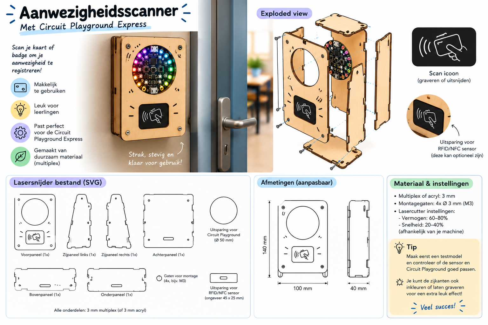

Wie zijn wij?
Wij zijn een projectgroep uit Rotterdam. Samen ontwerpen en bouwen we een scanner voor op school. Drie van ons zijn developer, en onze Scrum Master houdt de planning in de gaten.
We kijken niet alleen naar de techniek. Een scanner is pas goed als leerlingen meteen snappen wat ze moeten doen.
Maak kennis met het team
Aanwezigheidsscanner
Een leerling houdt een kaart of badge voor de scanner en staat als aanwezig geregistreerd. Geen namenlijst en geen wachttijd: de les kan sneller beginnen.
Ons prototype maken we met een Circuit Playground Express in een behuizing van lasergesneden multiplex. Een scan-icoon op de voorkant laat zien waar de kaart heen moet.
Bekijk de scanner